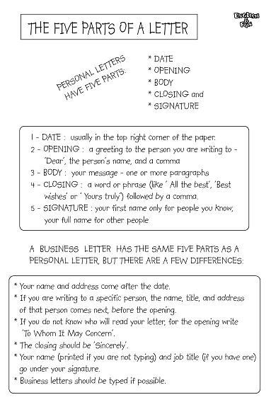

Thư là một phần rất phổ biến và quan trọng trong đời sống giao tiếp của hầu hết tất cả mọi người trong xã hội. Thư có nhiều dạng như thư thân mật, thư thương mại, thư cá nhân,thư giao dịch,... Tuy nhiên cấu trúc của một bức thư cho dù là thư thương mại hay thân mật đều được chia thành sáu hoặc bảy phần cơ bản.
Bao gồm:
| 1. | Heading | Tiêu đề |
| 2. | Inside address | Địa chỉ bên trong (Thông thường chỉ dùng trong thư công việc mà không sử dụng trong thư thân mật.) |
| 3. | Salutation | Lời chào |
| 4. | Body | Phần thân của bức thư |
| 5. | Complimentary close | Phần kết thúc, tán tụng |
| 6. | Signature | Phần chữ ký |
| 7. | Superscription | Địa chỉ ở trên bìa thư |
1. THE HEADING (TIÊU ĐỀ)
Phần tiêu đề của một bức thư thường bao gồm địa chỉ: tên đường, tên thành phố, tên bang, quốc gia và ngày tháng.
Ví dụ dưới đây sẽ minh họa rõ hơn cho các bạn:
| 112 Lang Ha str., Dong Da dist. | |
| Ha Noi , Viet Nam | |
| March 8, 2009 |
Phần tiêu đề khi được đánh máy hay viết tay đều phải đặt ở trên cùng của trang giấy đầu tiên, gần với lề bên phải. Chính vì vậy khi đánh máy hoặc viết các bạn nên bắt đầu từ giữa trang để phần tiêu đề sẽ không bị dịch về phía lề trái.
Trong trường hợp, bức thư của các bạn rất ngắn và được viết ở trung tâm của trang giấy, phần tiêu đề vì vậy cũng sẽ được đặt thấp
và xa phần lề giấy hơn là trong bức thư dài.
Ngoài ra, các bạn hãy lưu ý không nên đặt phần tiêu đề cao hơn 3cm tính từ phần trên cùng của khổ giấy và cách phần lề giấy vượt quá 2,25 cm. Nếu để phần tiêu đề quá sát như vậy sẽ làm ảnh hưởng đến mỹ quan của bức thư và khiến người nhận thư khó quan sát.
Trong trường hợp địa chỉ đã được in sẵn trên giấy hoặc cài đặt sẵn trong phần viết thư của mình, các bạn chỉ cần viết thêm phần ngày tháng ở dòng bên dưới.
Các bạn hãy lưu ý viết thật khéo và cẩn thận. Bởi nếu như kết hợp những ký tự được đánh máy và viết tay lại với nhau
một cách vội vàng sẽ khiến cho bức thư của các bạn nhìn lộn xộn, không rõ ràng.
Phần địa chỉ của những văn phòng xã hội, công ty bảo hiểm, văn phòng luật khi đã được in sẵn thì nên để cách phần trên cùng của giấy 2,25 cm và có thể được đặt ở giữa hoặc gần lề bên phải. Trong trường hợp này, phần ngày tháng có thể ghi ở cuối bức thư, ở góc bên tay trái và ngay sau phần chữ ký.
2. THE INSIDE ADDRESS (ĐỊA CHỈ BÊN TRONG)
Trong phần thư cá nhân, thân mật, chúng ta sẽ không sử dụng đến địa chỉ bên trong. Tuy nhiên trong tất cả các thư thương mại, công việc phần địa chỉ bên trong thực sự cần thiết.
Trong phần này, tên và địa chỉ của người nhận thư thương mại sẽ được đặt ở phía bên trái của tờ giấy, nằm dưới phần tiêu đề. Tuy nhiên khoảng cách giữa phần tiêu đề và phần địa chỉ bên trong sẽ được quyết định bởi chiều dài và sự sắp xếp của bức thư.
Phần địa chỉ bên trong nên bao gồm số nhà, tên đường, thành phố và bang, quốc gia. Cũng có những trường hợp các bạn có thể bỏ phần tên bang hoặc quốc gia ví dụ như thư trao đổi giữa những cá nhân hoặc công ty cùng làm việc ở một thành phố.
Ví dụ:
| VuongHungVan, HaNoi construction corporation (HANCORP), 25 Mai Dich str., Cau Giay dist., Ha Noi. |
Phần dấu chấm câu ở dòng cuối của tiêu đề và địa chỉ có thể được sử dụng hoặc bỏ đi. Nhưng xu thế khá phổ biến hiện nay là mọi người không dùng dấu chấm ở cuối dòng.
Ngoài ra, phần địa chỉ bên trong cũng có thể được viết ở cuối bức thư, bên lề trái, dưới phần chữ ký. Cách sử dụng đó khá phổ biến trong thư văn phòng ở cả hai dạng trang trọng lẫn thân mật.
3. THE SALUTATION (LỜI CHÀO)
Social & Personal Letters (Thư thân mật, cá nhân)
Lời chào gửi đến người nhận trong thư thân mật, cá nhân thường được viết ở bên tay trái, nằm dưới phần tiêu đề khoảng 1,5 cm và cách lề khoảng 3cm.
Dạng câu chào "My dear" được người Mỹ đánh giá là trang trọng hơn "Dear". Vì vậy, khi viết thư cho một người phụ nữ chúng ta mới chỉ quen biết sơ sơ ta nên dùng "My dear Mrs. Lan". Còn nếu định viết cho một người đã thân thiết hơn thì nên viết: "Dear Mrs. Lan ".
Tuy nhiên các bạn hãy lưu ý, người Anh thì lại cho rằng "My dear
Mrs. Lan" sẽ được dùng để viết cho một người bạn thân thiết còn "Dear Mrs. Lan" là dành cho bức thư gửi tới một người chỉ mới quen biết và hiểu rất ít về họ. Chính vì vậy khi viết thư các bạn hãy xác định rõ văn hóa, phong tục của đối tượng nhận thư để chọn lựa câu chào phù hợp.
Còn nếu các bạn viết thư cho một người lạ hoàn toàn, chưa từng gặp mặt thì các bạn nên viết tên họ đầy đủ của người nhận thư sau đó viết phần "Dear
Madam" hoặc "Dear Sir" ở bên cạnh (phía phải).
Ví dụ:
| Mrs. NguyenThuThuy, Dear Madam: | |
| Mr. LeMinh, Dear Sir: | |
| Mrs. John Evans, Dear Madam, | |
| Mr. William Sykes, Dear Sir, |
Phần câu chào trong thư thân mật, cá nhân có thể được theo sau bởi dấu hai chấm hoặc dấu phẩy.
Business Letters (Thư thương mại)
Trong thư thương mại, những câu chào được sử dụng phổ biến là:
| "Dear Sir," | |
| "Gentlemen," | |
| "Dear Madam," | |
| "Mesdames." |
Ngoài ra những câu chào trang trọng hơn là:
| "My dear Sir" | |
| "My dear Madam" |
Các bạn hãy lưu ý từ thứ hai trong câu chào trang trọng trên sẽ không được viết hoa.
Phụ nữ đã kết hôn hay chưa kết hôn ta đều có thể dùng câu chào: "Dear Madam." Nếu người viết thân quen với người nhận thư thì cũng có thể sử dụng câu chào ít trang trọng hơn như:
| "My dear Mrs. Huong." |
Phần câu chào sẽ được đặt ở dưới phần địa chỉ bên trong và cách lề trái cùng khoảng cách như phần địa chỉ.
Ví dụ:
| VuongHungVan, HaNoi construction corporation (HANCORP), 25 Mai Dich str., Cau Giay dist., Ha Noi . | |
| Gentlemen: |
Câu chào "Dear Sirs" thì đã không còn được sử dụng nữa mặc dù trong nhiều trường hợp câu chào đó đưa ra cách thể hiện tốt hơn.
Việc sử dụng tên đứng một mình như một câu chào sẽ không được chấp nhận trong thư thương mại.
Ví dụ:
| Mr. Ngoc Lam: I have your letter of-- |
Những dạng câu chào nên tránh sử dụng trong thư thương mại là:
| "Dear Miss," | |
| "Dear Friend," | |
| "Messrs." |
| Dear Mai Anh, |
| Dear Mr. ThanhPhong: | |
| Dear Mr ThanhPhong |
Titles (Tên hiệu)
Việc hiểu biết và nắm rõ các tên hiệu sẽ giúp ích cho các bạn rất nhiều trong việc lựa chọn câu chào.
Sau đây bài giảng sẽ giới thiệu cho các bạn một số tên hiệu phổ biến được dùng trong câu chào khi viết thư trao đổi:
| "Mr.," | Ngài, ông |
| "Mrs.," | Bà (đã có chồng) |
| "Miss," | Cô (chưa có chồng) |
| "Messrs.," | Các ngài, các ông |
| "Reverend," | Đức (tiếng tôn xưng các giáo sĩ, viết tắt Rev.) |
| "Doctor," | Tiến sĩ |
| "Professor," | Giáo sư |
| "Honorable." | Ngài, tướng công (tiếng tôn xương đối với các tước công trở xuống, các nhân vật cao cấp ở Mỹ, các đại biểu hạ nghị viện Anh trong các cuộc họp...; viết tắt Hon) |
| "Esquire," | Ngài, ông |
Người Anh thường sử dụng phổ biến tên hiệu "Esquire," (được viết tắt là "Esq." ) thay vì dùng "Mr." như người Mỹ.
Tên hiệu "Messrs." được dùng để chỉ hai hay nhiều người cộng tác kinh doanh.
Ví dụ:
| "Messrs. Le Minh and Ngoc Lam" | |
| Hoặc | |
| "Messrs. Le Minh & Ngoc Lam" |
Nhưng nếu các bạn gửi đến công ty như "The National Cash Register Company" thì các bạn không nên dùng:
| "Messrs. National Cash Register Company" | |
| Mà hãy dùng | |
| "The National Cash Register Company." |
"Messrs." là phần viết tắt của "Messieurs", tuy nhiên các bạn không nên sủ dụng dạng viết tắt nào khác ngoài "Messrs."
Ngoài ra tên hiệu "Miss" không được coi là phần viết tắt và không được theo sau bởi dấu phẩy.
4. THE BODY OF THE LETTER (PHẦN THÂN CỦA BỨC THƯ)
Những bức thư thân mật cũng được chia thành hai dạng: thư thân mật trang trọng và thư thân mật không trang trọng.
Dạng thư trang trọng phải được sắp xếp sao cho toàn bộ bức thư chỉ gói gọn trong một trang. Điều đó sẽ giúp người nhận thư xác định thông tin một cách nhanh chóng và dễ dàng.
Ngoài ra thư trang trọng phải được viết dựa theo những quy tắc và quy định nhất định. Có một số loại thư thân mật trang trọng, đó là: thư mời tham gia một công việc trang trọng, thư thông báo và thư công nhận. Trong những dạng thư ấy, ngôi thứ ba thường được sử dụng rất nhiều. Nếu các bạn nhận được bức thư được viết bằng ngôi thứ ba, phần thư trả lời của mình các bạn cũng phải sử dụng dạng viết ấy.
Nếu các bạn viết:
| Mr. and Mrs. John Evans regret that we are unable to accept Mrs. Elliott's kind invitation for the theatre on Thursday, May the fourth as we have a previous engagement . |
sẽ thể hiện sự thiếu hòa hợp, tương thích khi viết thư trao đổi. Chính vì vậy các bạn nên viết như sau:
| Mr. and Mrs. John Evans regret that they are unable to accept Mrs. Elliott's kind invitation for the theatre on Thursday, May the fourth as they have a previous engagement. |
Các bạn hãy lưu ý trong phần thư trang trọng, giờ giấc và ngày tháng sẽ không được viết bằng số mà phải viết bằng chữ cái.
Với phần thư thân mật, không trang trọng, không có quy tắc đặc biệt nào cả ngoại trừ văn phong lịch sự, nhã nhặn. Điều đó đòi hỏi chúng ta phải suy nghĩ cho rõ ràng, minh bạch rồi mới viết ra. Việc dành vài phút suy nghĩ xem các bạn muốn nói gì trước khi bắt tay vào viết thư là điều hết sức cần thiết. Bởi viết một bức thư rời rạc, không mạch lạc cũng không khá hơn việc bạn mặc một bộ quần áo cẩu thả, nhếch nhác.
Các bạn hãy đảm bảo rằng mình viết đúng chính tả. Nếu gặp bất kỳ khó khăn nào trong việc viết chính tả các bạn hãy để sẵn một cuốn từ điển nhỏ trong ngăn kéo bàn để tiện cho việc tra từ.
Các bạn nhớ
viết hoa khi bắt đầu một câu. Ngoài ra nếu các bạn chuyển sang đề tài khác thì hãy viết một đoạn mới. Hãy đặt dấu chấm ở cuối câu tường thuật hoặc dấu chấm hỏi trong câu nghi vấn và dấu chấm than trong câu cảm thán. Các bạn hãy nhớ để lề ở cả hai phía của bức thư để giúp bức thư nhìn rõ ràng hơn.
Trong phần thân của một bức thư thương mại câu mở đầu là quan trọng nhất và thường được dùng để
đưa ra đề tài hoặc mục đích viết thư. Đưa đề tài ở ngay câu đầu tiên sẽ giúp người nhận thư ngay lập tức có thể tập trung vào vấn đề chính của bức thư.
Ngoài ra, trong phần này các bạn cũng nên gợi ý một cách nhã nhặn sở thích cá nhân của người nhận thư.
Ví dụ, người nhận thư có thể sẽ cảm thấy phản cảm khi đọc được dòng viết sau trong thư:
| Yours of the 14th regarding the shortage in your last order received. |
Các bạn hãy quan sát xem câu sửa dưới đây đã nhã nhặn, lịch sự hơn chưa:
| We regret to learn from your letter of March 14th that there was a shortage in your last order. |
Các đoạn văn trong phần thân của bức thư nên được dùng để phân chia các ý mà các bạn muốn truyền đạt. Nếu các bạn có thể sắp xếp và nhóm sẵn trong đầu các chủ đề và ý một cách logic thì các bạn sẽ không gặp khó khăn gì trong việc tách chúng thành các đoạn nhỏ trong bức thư. Nếu mỗi đoạn bạn viết chỉ gồm có một đề tài, ý và những thông tin liên quan hay bổ trợ người đọc thư sẽ hiểu nhanh và dễ dàng hơn.
Về phần bố cục, dòng đầu tiên của phần thân bức thư nên được đặt cách lề trái cùng khoảng cách như phần địa chỉ bên trong và phần câu chào.
Ngoài ra, phần mở đầu của tất cả các đoạn đều nên lùi vào khoảng 3cm từ bên lề trái để người nhận thư có thể dễ dàng nhận dạng từng đoạn.
Các bạn hãy lưu ý không nên viết hoặc đánh máy cả hai mặt của tờ giấy viết thư. Trong phần thư thương mại, nếu bức thư đó yêu cầu nhiều hơn một trang các bạn hãy dùng tờ giấy khác có cùng kích cỡ và chất lượng để viết tiếp. Và lưu ý, những tờ tiếp theo đó sẽ không có phần tiêu đề và câu chào, ngoài ra còn được đánh số ở trên cùng.
5. THE COMPLIMENTARY CLOSE (PHẦN KẾT THÚC, TÁN TỤNG)
Phần kết thúc, tán tụng nằm ngay dưới phần thân của bức thư, cách khoảng 2, 3 dòng. Chỉ có từ đầu tiên của câu tán tụng là cần được viết hoa còn lại chúng ta viết như bình thường. Dấu phẩy thường được đặt ở cuối phần kết thúc, tán tụng.
Những từ các bạn có thể sử dụng rất đa dạng dựa theo sự thân thiết, tình hữu nghị giữa người gửi thư và nhận thư.
Trong phần thư thương mại, những câu tán tụng khá hạn chế, chỉ gồm một số câu dưới đây:
| Yours truly, | |
| Truly yours, | |
| Yours very truly, | |
| Very truly yours, | |
| Yours respectfully, | |
| Respectfully yours, | |
| Yours very respectfully, |
Nếu người viết có mối quan hệ thân thiết hơn với người nhận thư, họ có thể sử dụng những câu dưới đây:
| Faithfully yours, | |
| Cordially yours, | |
| Sincerely yours, |
Những bức thư văn phòng không trang trọng thường dùng:
| Respectfully yours, | |
| Yours respectfully, |
Còn những bức thư thân mật không trang trọng thường dùng:
| Yours sincerely, | |
| Yours very sincerely, | |
| Yours cordially, | |
| Yours faithfully, | |
| Yours gratefully, | |
| Yours affectionately, | |
| Very affectionately yours, | |
| Yours lovingly, | |
| Lovingly yours, |
Các bạn hãy lưu ý "Yours" có thể đứng ở đầu hoặc cuối của phần kết thúc, tán tụng nhưng không được viết tắt hoặc bỏ sót.
6. THE SIGNATURE (PHẦN CHỮ KÝ)
Phần chữ ký được viết bên dưới phần kết thúc, tán tụng nằm gần với lề trái của khổ giấy.
Trong phần chữ ký của thư thân mật, một người phụ nữ đã kết hôn có thể ghi phần tên
của họ đơn giản là "Mai Huong" không cần thiết phải ghi là "Mrs. Mai Huong".
Ví dụ:
| Yours very truly, | |
| Mai Huong |
Ngoài ra, trường hợp một người phụ nữ chưa kết hôn thì có thể chỉ viết tên của họ không cần phải thêm Miss, nếu thêm thì nên được đặt trong dấu ngoặc tròn.
Ví dụ:
| Yours sincerely, | |
| Vuong Lan / (Miss) Vuong Lan |
Đó là phần viết tên, còn phần ký tên các bạn hãy lưu ý luôn tự ký tên và dùng mực viết, hạn chế sử dụng phần cài đặt chữ ký sẵn.
Thông thường trong phần thư thương mại, tên của công ty sẽ được đánh máy sẵn ở trên phần khoảng trống để người viết ký tên. Và phần chức vụ cũng được đánh máy sẵn ở bên dưới. Điều đó sẽ giúp người viết tiết kiệm thời gian triệt để và giúp bức thư thương mại nhìn sạch sẽ, sáng sủa hơn.
Ví dụ:
| Hall, Haines & Company (được đánh máy sẵn) | |
| Trieu Phong (viết tay) | |
| Cashier (được đánh máy sẵn) |
Không nên ký nhiều kiểu chữ ký khác nhau mà hãy cố gắng chỉ sử dụng một dạng cố định. Bởi chữ ký là phần rất quan trọng mang tính biểu trưng có thể thay thế cho bạn nên cần phải thống nhất trong thư từ hay các văn bản giấy tờ.
Ví dụ, nếu tên là Nguyen Thanh Hoa thì bạn không nên gửi thư cho một người rồi ký tên là "Hoa" sau đó trong bức thư gửi đến một người khác lại ký là "Thanh Hoa" hay "Nguyen Thanh Hoa". Điều đó hết sức cấm kị nên các bạn hãy thật sự lưu tâm.
7. THE SUPERSCRIPTION (PHẦN ĐỊA CHỈ TRÊN BÌA THƯ)
Các bạn hãy lưu ý nếu gửi thư cho một người phụ nữ thì luôn phải viết phần tên hiệu ở phần địa chỉ trên bìa thư như "Mrs." hoặc "Miss.". Trường hợp dùng tên hiệu "Dr." để chỉ học vị của người phụ nữ đó sẽ không được ứng dụng trong phần thư thân mật. bởi dùng như vậy quá trang trọng, không phù hợp.
Nếu gửi thư cho một người đàn ông, tên hiệu được sử dụng phổ biến nhất trong phần địa chỉ trên bìa thư là "Mr." hoặc "Esq."
Tuy nhiên, thông thường địa chỉ trên bìa thư của một bức thư thân mật sẽ được ghi là:
| To: Truong Dong, Esq.,... |
| To: Mr. Truong Dong, ... |
Đôi khi, trong thư thương mại địa chỉ của người viết sẽ được in sẵn ở góc bên trái của phong bì thư. Tuy nhiên các bạn hãy lưu ý chỉ in sẵn phần địa chỉ, không nên đưa thêm phần quảng cáo về công ty ơ trên phong bì thư.
Các bạn hãy lưu ý phần địa chỉ sau khi đã hoàn thành nên nằm dưới một chút đường ở giữa phong bì thư và cách đều hai lề trái, phải.
Dấu chấm câu ở cuối dòng địa chỉ thường được bỏ đi.